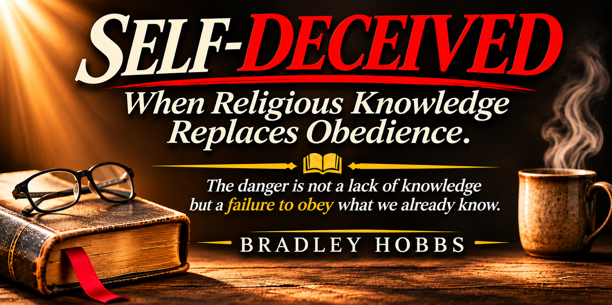

A Biblical Examination
SELF-DECEIVED
When Religious Knowledge Replaces Obedience
Knowing the Word is not the same as living under its authority. James calls us to become doers of the Word, not hearers only, deceiving ourselves.
Read the BookAbout This Book
The Question at the Heart of This Book
Are we living according to the Word we have heard, or have we become convinced that hearing the Word is enough?
Religious familiarity can create a confidence that appears to be spiritual maturity. We may know Scripture, recognize biblical principles, and speak confidently about faith while overlooking the places where our conduct remains unsubmitted.
SELF-DECEIVED examines the distance between what we know and how we live. The invitation is not to judge another person, but to allow Scripture to examine our own hearts and lead us toward honest repentance and practical obedience.